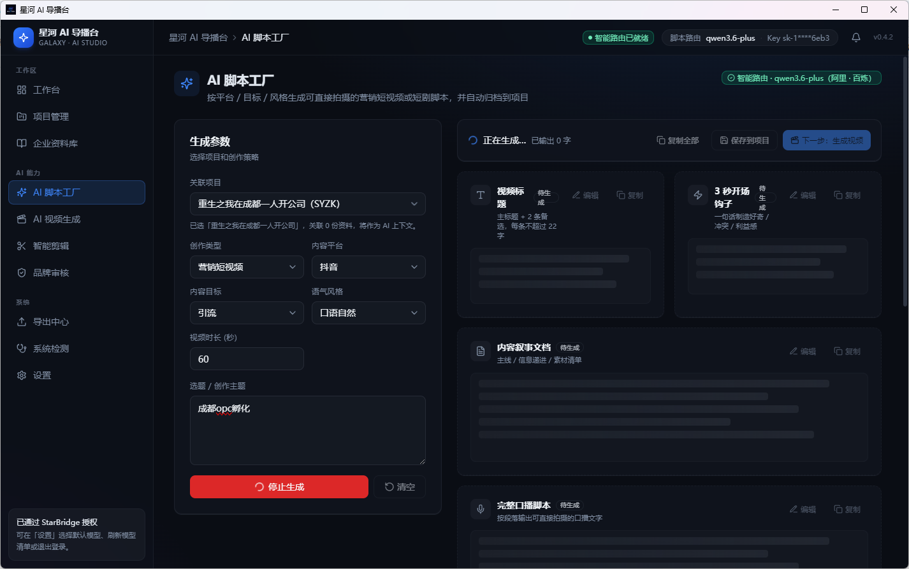
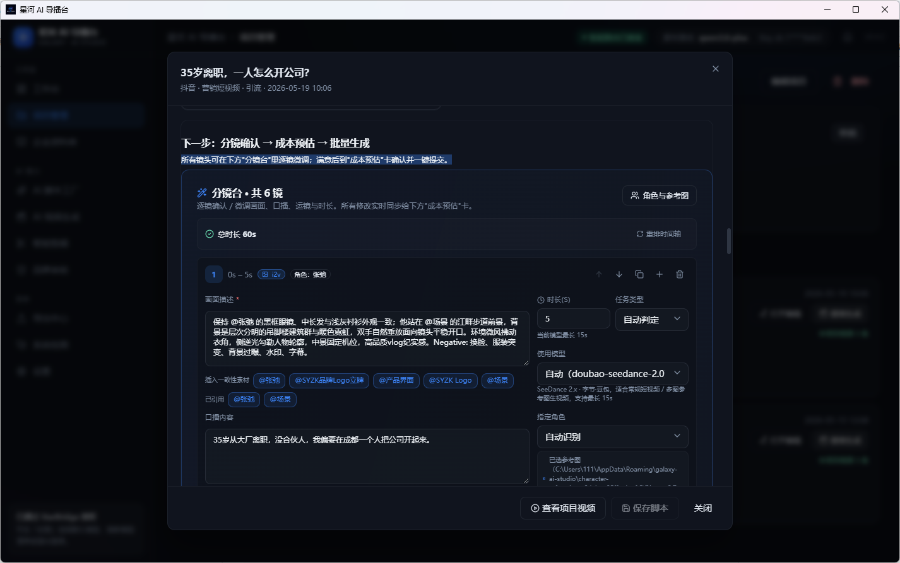
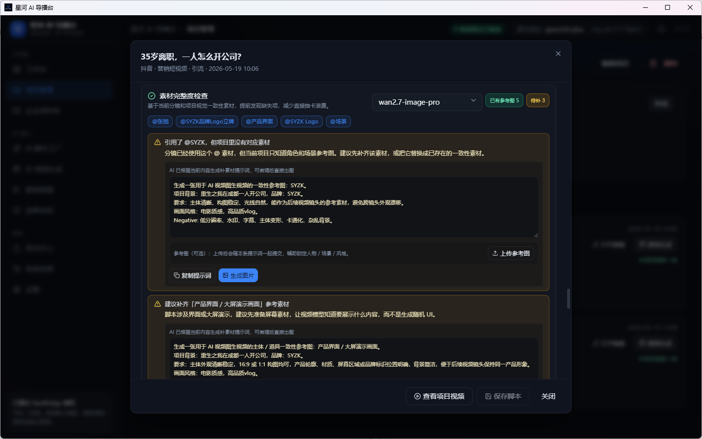
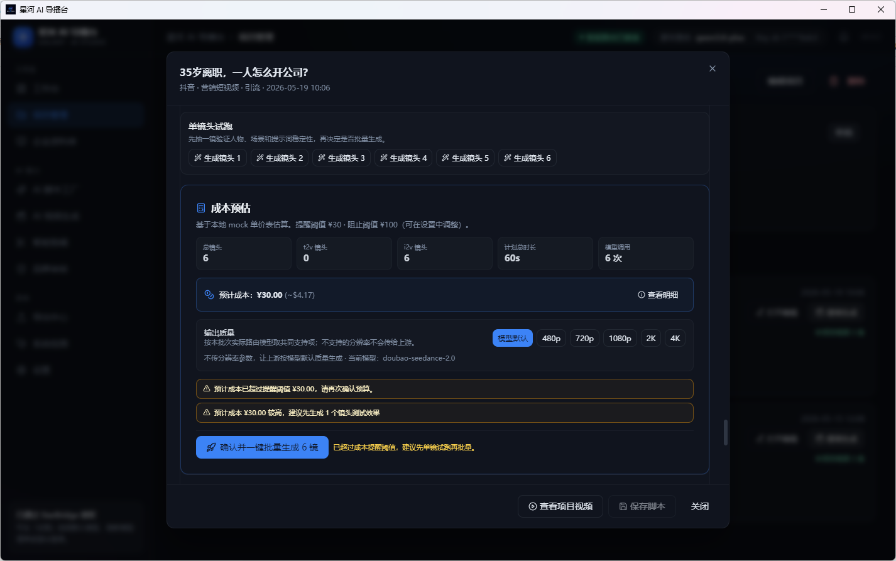
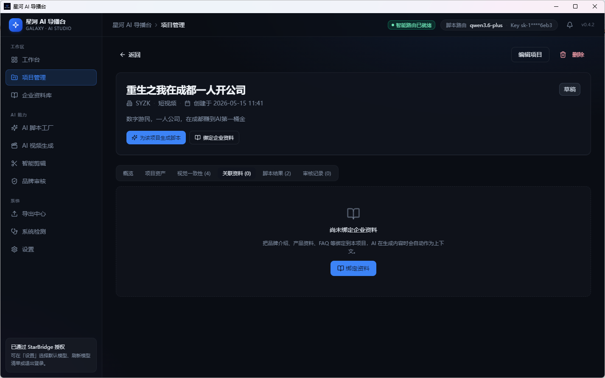
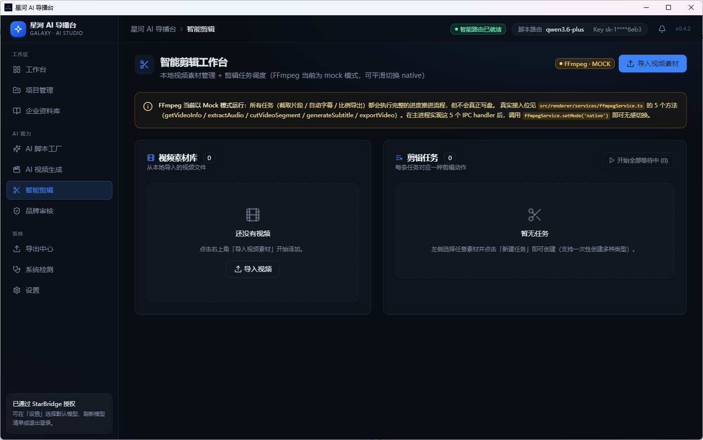
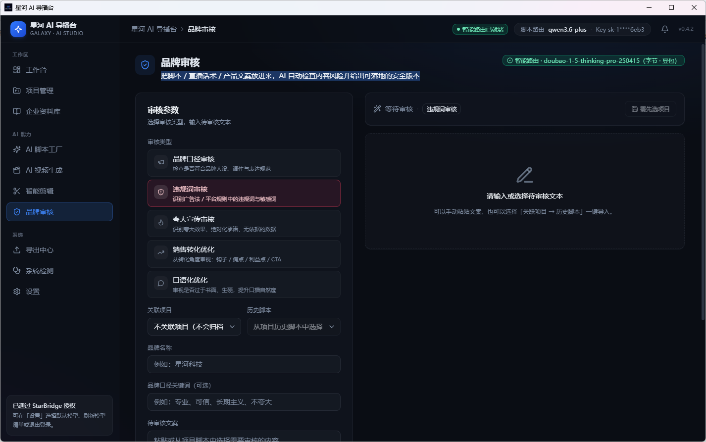

输入目标
选择平台、营销目标、产品资料、品牌语气和视频风格。
企业级 AI 视频生产工作台
把品牌资料、营销目标和平台风格交给 AI，从脚本、分镜、素材补齐到成片审核，一次完成。
为短视频运营、直播电商、品牌市场和 MCN 团队打造，让商业视频生产从灵感进入可执行流程。
Workflow
AI导播台把内容生产拆成可确认、可调整、可审核的步骤，团队可以在提交生成前看清脚本、镜头、素材和成本。
选择平台、营销目标、产品资料、品牌语气和视频风格。
自动生成标题、钩子、叙事文本、口播脚本、字幕建议和评论区引导。
逐镜调整画面、人物、场景、运镜、台词和生成模型。
检查人物、产品、场景、Logo 和参考图，自动生成补图提示词。
提交前显示镜头数、预计时长、模型调用、排队时间和预算提醒。
视频生成后继续进入同一工作台，调度本地素材与剪辑任务。
检查夸大宣传、敏感词、语气偏差，并给出可替换的安全版本。
Features
按抖音、小红书、视频号、快手等平台风格生成可拍、可剪、可投放的营销脚本。
先确认分镜，再批量提交生成任务，减少反复试错。
提前发现缺失的人物、产品、场景和品牌元素，一键生成补图提示词。
在生成前看清镜头数、模型消耗和费用预估，帮助团队控制预算。
把品牌介绍、产品资料、FAQ 和案例作为 AI 生成的上下文。
把脚本、直播话术、产品文案放进来，自动检查内容风险并给出安全版本。
Product UI
第一版官网直接使用产品截图，避免只有抽象光效，让用户一眼看见工作台如何运转。
AI Script Factory
选择平台、内容目标和语气风格，生成可直接进入分镜的营销脚本。

Product Tour
把这些界面按真实生产顺序组织起来：先生成脚本，再确认分镜、补齐素材、估算成本，最后进入剪辑与审核。
01 / Script
用户选择项目、平台、内容目标、语气风格和视频时长后，AI 自动生成标题、钩子、内容叙事、口播脚本和分镜基础。

把脚本拆成镜头，逐镜修改画面、角色、场景、台词、模型和时长。

发现缺少的人物、品牌、产品和场景素材，并给出可直接生成图片的提示词。

提交生成前看清镜头数、计划时长、模型调用次数和预算提醒。

把品牌介绍、产品资料和 FAQ 绑定到项目，让生成内容更贴近真实业务。

管理本地视频素材和剪辑任务，承接直播切片、字幕、比例导出等后续动作。

把脚本、直播话术和产品文案放入审核模块，检查违规词、夸大宣传和语气偏差。
Teams
新品、活动、节点营销，快速生成一组可投放内容。
直播前有话术，直播后有切片，评论区也有转化引导。
用项目化工作流管理多个品牌的脚本、分镜、素材和交付。
把产品知识、FAQ、案例故事变成销售能用的视频内容。
FAQ
普通工具通常从提示词直接生成视频片段，AI导播台更关注企业内容生产流程，从品牌资料、平台风格、脚本、分镜、素材、成本到审核形成闭环。
可以。系统会先生成分镜确认，用户可以在分镜台逐镜调整，再提交生成。
系统会检查当前分镜所需素材，并自动生成补图提示词，支持一键 AI 成图或上传本地素材。
价格方案后续开放。第一版官网先聚焦产品定位、核心流程和界面展示。